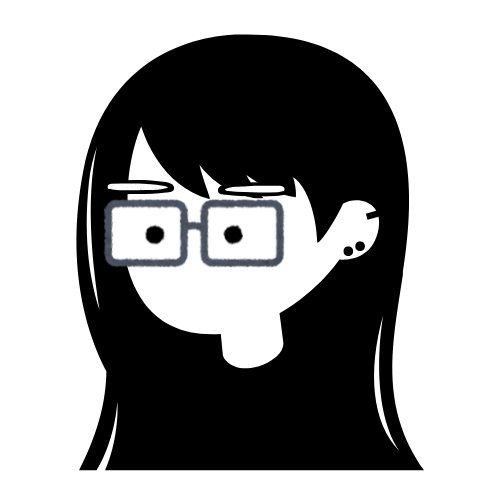
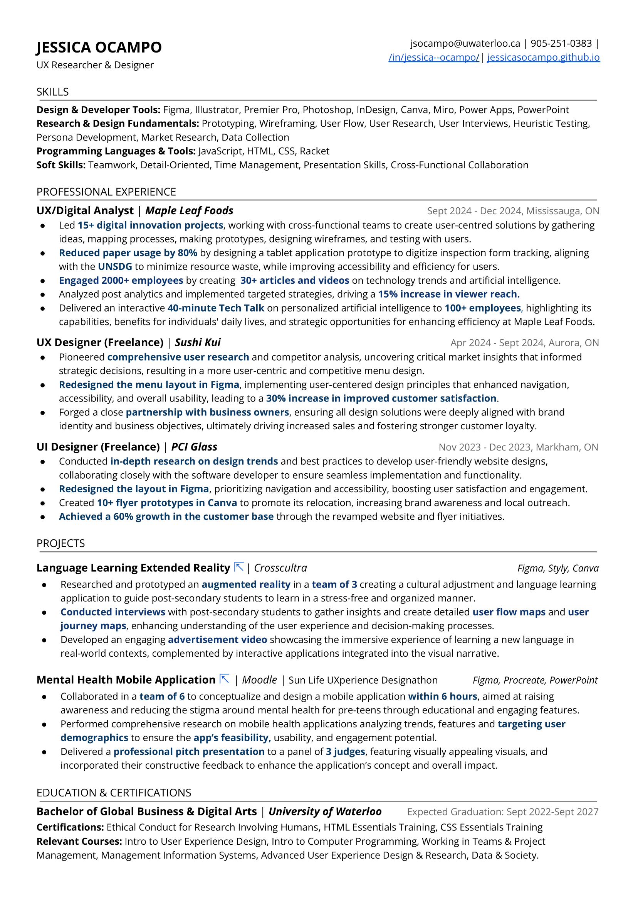

>HELLO, I'M JESS .
A pro in design, research, & analytics.
Previously @ Maple Leaf Foods, Sushi Kui, PCI Glass, etc.
(◣_◢) (ಠ_ಠ)
||| ||| < Grrrah!
/ /‾‾‾‾‾‾\ \ /‾‾‾‾‾‾‾‾‾‾‾‾‾‾‾\
/ / O O \ \ / O O O O \
| | | ★ | | | | _____ |
| | |_|_| | | | | ★ | |
| \__________/ | \ \_____/ /
\ / \ /
\_________________/ \_____________/
// \\ // \\
// \\ // \\
||__ __||__ __||__ __||__
/_____\ /_____\ /_____\ /_____\
^^^^^^^^^^^^^^^^^^^^^^^^^^^^^^^^^^^^^^^^^^^^^^^^^^^^^^^^^^^^^^^^^^
>WILD UX MONSTERS HAVE APPEARED!!
Fix the issues to save the user experience.
What Can I Do?
>EXPLORE PROJECTS .
CROSSCULTURA
Team: Jessica Ocampo, Isabelle Cho, Jackie Zhang
Duration: 2 Months
Role:
Tools:


Short Video
Overview
The project focused on developing a Cultural Adjustment and Language Learning App to support
international students in
The goal was to create an
Problem Statement
International students often struggle with language barriers, adapting to cultural norms
and feelings of isolation, which intensify
Process
Research: Methods Used: Think-aloud protocol, System Usability Scale (SUS) surveys, semi-structured interviews, and user interaction analytics. Feedback emphasized accessibility, intuitive use, and engaging features.
Ideation: Brainstormed features like immersive scenarios (e.g., grocery shopping, lectures), NPC interactions, and gamification elements (XP points, levels).
Design: Tools: Figma and Styly for high-fidelity prototypes. Implemented Universal Design principles, ensuring accessibility (e.g., high-contrast modes, text-to-speech, and voice commands).
Testing: Validation Methods: User testing provided qualitative and quantitative insights. Issues like navigation, clarity of interface elements, and the lack of interactivity were identified and iterated upon.
Solution
The solution featured
Impact
Results: The app demonstrated improved usability, with SUS scores indicating it was user-friendly, achieving a mean ease-of-use score of 3.75. Users provided positive feedback, praising features such as transcripts, adjustable audio speeds, and XP rewards for supporting mental health and enhancing engagement. Additionally, the simulated environments helped
reduce anxiety by making learning less intimidating. What was the outcome? Users appreciated the app’s immersive and gamified approach, encouraging frequent use. Participants suggested the potential for increased student confidence and improved academic/social adjustment.
Measurable metrics: Average SUS score: 74 (indicative of good usability). Reduced perceived complexity: Low complexity score (mean 1.5).
Reflection
What Did I Learn?
The project highlighted the importance of user-centered design and the value of
continuous iteration based on feedback . Incorporating accessibility and inclusivity was shown to enhance usability and increase user satisfaction. Additionally, user testing proved invaluable for uncovering hidden pain points and identifying areas for improvement.
Challenges I faced and how I overcame them.
One challenge was ensuring intuitive navigation and interactivity within the app. This was addressed by adding headers, improving button clarity, and enhancing navigation paths. Another challenge involved balancing immersion and simplicity, which was resolved by streamlining unnecessary features, such as removing confusing visualizers.
The project enhanced proficiency in prototyping tools like Figma and Styly. It also developed skills in conducting user research and analyzing both qualitative and quantitative data. Additionally, it emphasized applying Universal Design principles to ensure accessibility for all users.
SUSHI KUI'S MENU

Team: Jessica Ocampo
Duration: 4 months
Role:
Tools:
Overview
The project involved redesigning the menu for Sushi Kui,
a restaurant in Aurora. The focus was to create a more
Problem Statement
The existing menu at Sushi Kui was not user-friendly,
For the business, these issues led to suboptimal
customer experiences, potentially reducing retention
and satisfaction. Furthermore, the outdated design
and pricing inconsistencies affected the restaurant’s
competitiveness and could create confusion among customers.
Process
Research: I conducted user research to identify pain points in the current menu and analyzed competitors' menus to understand industry standards. This helped inform strategic design decisions, ensuring the redesign would meet user needs and stand out in the competitive market. I also took into account the restaurant’s demographic of young adults, middle-aged customers, and elders to
ensure the design was accessible and easy to navigate for a wide age range. Ideation: I worked closely with the business owners to brainstorm ideas, ensuring the design aligned with both the brand's identity and their vision. They gave me a lot of creative freedom, but I made sure to incorporate their feedback throughout the process.
Design: Using Figma, I created a user-friendly menu layout that prioritized accessibility, readability, and visual appeal. I paid attention to the
visual hierarchy, ensuring that customers could easily find key information. The design also included photos of the food, which I personally took, ensuring high-quality, appetizing images that aligned with the restaurant’s branding.Testing: I conducted informal testing with a few regular customers to gather feedback on the new design, focusing on usability and ease of navigation. I iterated based on this feedback to refine the design before finalizing it.
Solution
The key features of the redesign included a streamlined
layout with
This redesign significantly improved usability,
making the menu easier to understand and navigate,
which
Impact
The redesigned menu led to an increase in customer
satisfaction, as the new layout was
Reflection
What Did I Learn?
I learned the importance of maintaining a balance between user-centric design and business objectives.
Collaboration with the business owners was key to ensuring the design met their vision while addressing user needs.Additionally, I learned that updating pricing and making it easy to integrate into the design is crucial for a smooth customer experience, especially when considering a broad age range of customers.
Challenges I faced and how I overcame them.
The main challenge was taking high-quality photos of the food, which took considerable time and effort. I overcame this by planning a dedicated photo session, ensuring the images were both visually appealing and aligned with the brand.
Additionally, ensuring that the pricing changes were incorporated seamlessly into the design required
constant communication with the owners.
I gained skills in user research, UX/UI design, and collaboration with clients to ensure the final product met brand objectives. I learned to integrate pricing updates while maintaining usability and clarity. Additionally, I developed insight into age-inclusive design, making the menu accessible to a diverse customer base.
Learn More.
>WHO'S JESSICA?

Hi, I’m Jessica Ocampo, a third-year
Global Business and Digital Arts
student at the
My professional journey spans roles at
Outside of my academic and professional work, I run a
HOBBIES
INTERESTS
PHILOSOPHY
I believe that every interaction tells a story,
and I aim to craft experiences that are not only
functional but also captivating and fun. By
infusing elements of
My goal is to transform the ordinary into
the extraordinary, making every click,
tap, and scroll feel like an
Contact Information
>LET'S CONNECT :)
Let's get in touch! You can reach me through email or social media.
Employment History?
>HAPPY VIEWING .
Here is a summary of my qualifications, experience, and skills.
